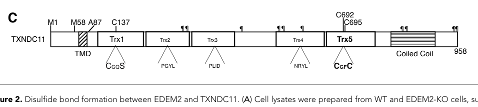

TXNDC11 (Thioredoxin domain-containing protein 11; also called EFP1) is a large (985 aa) single-pass endoplasmic reticulum membrane glycoprotein of the protein disulfide isomerase (PDI) family. It contains a single N-terminal transmembrane helix and a luminal region with five thioredoxin (Trx)-like domains followed by a C-terminal coiled coil. Only one of its Trx domains carries a canonical redox-active CXXC motif; the other Trx folds are degenerate/redox-inactive, and biochemically the catalytic center behaves as a thiol-disulfide reductase rather than an oxidase. TXNDC11 forms a stable, disulfide-linked complex with the ER mannosidase-like protein EDEM2, and this covalent partnership is required for the initial mannose-trimming step (Man9 to Man8) that commits misfolded N-glycoproteins to ER-associated degradation (glycoprotein ERAD). TXNDC11 was originally identified through its interaction with the cytoplasmic regions of the dual oxidases DUOX1 and DUOX2 and with thyroid peroxidase, suggesting a redox-regulatory role linked to the thyroid hydrogen-peroxide-generating system, though TXNDC11 alone is not sufficient to support DUOX-mediated H2O2 generation. It is widely but weakly expressed, with higher expression in thyroid and prostate.
Definition: Molecular function: TXNDC11 Trx5 domain CXXC (C692-C695) exhibits thiol-disulfide reductase activity and forms a covalent disulfide with EDEM2; recommend annotating GO:0015035 protein-disulfide reductase activity (or GO:0003756 protein disulfide isomerase activity).
Justification: Experimentally established core molecular function (PMID:32065582) that is absent from the current GOA, which lists only protein binding for the MF aspect.
Supporting Evidence:
Definition: Biological process: TXNDC11 is required, via its disulfide-linked EDEM2 complex, for the first mannose-trimming step of glycoprotein ERAD; recommend annotating GO:0036503 (ERAD pathway) or glycoprotein catabolic process terms.
Justification: Well-supported biological role absent from current GOA (PMID:32065582; PMID:30374462).
Supporting Evidence:
| GO Term | Evidence | Action | Reason |
|---|---|---|---|
|
GO:0005789
endoplasmic reticulum membrane
|
IEA
GO_REF:0000044 |
ACCEPT |
Summary: TXNDC11 is a single-pass ER membrane protein; the ER membrane localization is its primary subcellular location and is consistent with its luminal thioredoxin-domain redox/chaperone function and its partnership with the ER mannosidase EDEM2.
Reason: Correct primary localization, matching the UniProt curated subcellular location and the protein's documented role as an ER-resident oxidoreductase.
Supporting Evidence:
file:human/TXNDC11/TXNDC11-uniprot.txt
SUBCELLULAR LOCATION: Endoplasmic reticulum membrane
|
|
GO:0005515
protein binding
|
IPI
PMID:17500595 Huntingtin interacting proteins are genetic modifiers of neu... |
KEEP AS NON CORE |
Summary: IntAct capture of a TXNDC11-HTT (huntingtin) interaction from a huntingtin-interacting protein screen. Bare protein binding is uninformative and this partner does not reflect TXNDC11's core ER redox/ERAD function.
Reason: Records a real but high-throughput interaction; per guidelines, bare protein binding is not elevated to a core function and the partner is unrelated to the EDEM2/ERAD activity.
Supporting Evidence:
file:human/TXNDC11/TXNDC11-uniprot.txt
Q6PKC3; P42858: HTT; NbExp=7; IntAct=EBI-749812, EBI-466029;
|
|
GO:0005515
protein binding
|
IPI
PMID:18985028 Hepatitis C virus infection protein network. |
KEEP AS NON CORE |
Summary: IntAct capture of a TXNDC11-HCV (hepatitis C virus) protein interaction from a virus-host interactome screen. Uninformative bare protein binding, unrelated to the core function.
Reason: Real but high-throughput xeno interaction; per guidelines not elevated to core, and the partner does not reflect TXNDC11's ER oxidoreductase/ERAD role.
Supporting Evidence:
file:human/TXNDC11/TXNDC11-uniprot.txt
Q6PKC3; PRO_0000037551 [Q9WMX2]; Xeno; NbExp=2; IntAct=EBI-749812, EBI-6863748;
|
|
GO:0005515
protein binding
|
IPI
PMID:32296183 A reference map of the human binary protein interactome. |
KEEP AS NON CORE |
Summary: IntAct captures from the HuRI binary interactome (partners including KLHL38, MKRN3, PRPF18, RAB2B, ZNF417). Uninformative bare protein binding from a systematic two-hybrid screen.
Reason: High-throughput binary interactome data; bare protein binding is not a core function and these partners do not reflect the EDEM2/ERAD or DUOX redox roles.
Supporting Evidence:
file:human/TXNDC11/TXNDC11-uniprot.txt
Q6PKC3; Q2WGJ6: KLHL38; NbExp=3; IntAct=EBI-749812, EBI-6426443;
|
|
GO:0005515
protein binding
|
IPI
PMID:32814053 Interactome Mapping Provides a Network of Neurodegenerative ... |
KEEP AS NON CORE |
Summary: IntAct capture from a neurodegenerative-disease interactome screen (HTT among partners). Uninformative bare protein binding.
Reason: High-throughput interactome data; bare protein binding is not elevated to core and the partner does not reflect TXNDC11's core ER redox/ERAD function.
Supporting Evidence:
file:human/TXNDC11/TXNDC11-uniprot.txt
Q6PKC3; P42858: HTT; NbExp=7; IntAct=EBI-749812, EBI-466029;
|
|
GO:0005829
cytosol
|
IDA
GO_REF:0000052 |
KEEP AS NON CORE |
Summary: HPA immunofluorescence-based cytosol annotation. TXNDC11 is a single-pass ER membrane protein with luminal thioredoxin domains; a primary cytosolic localization is not supported by its biology, and HPA reticular staining can be scored loosely. Retained as non-core rather than removed since it is an experimental (IDA) localization.
Reason: Conflicts with the curated ER membrane localization and the protein's topology; kept as non-core per the rule against removing experimental annotations on weak grounds.
Supporting Evidence:
file:human/TXNDC11/TXNDC11-uniprot.txt
SUBCELLULAR LOCATION: Endoplasmic reticulum membrane
|
|
GO:0005886
plasma membrane
|
IDA
GO_REF:0000052 |
KEEP AS NON CORE |
Summary: HPA immunofluorescence plasma-membrane annotation. This is consistent with the legacy EFP1/DUOX thyroid-system context (DUOX1/2 are plasma/apical-membrane oxidases) but is not TXNDC11's primary ER localization.
Reason: Peripheral localization tied to the DUOX/thyroid context; not the core ER site of action. Retained as non-core as an experimental annotation.
Supporting Evidence:
file:human/TXNDC11/TXNDC11-uniprot.txt
Interacts with the cytoplasmic part of DUOX1 and DUOX2.
|
|
GO:0005886
plasma membrane
|
TAS
Reactome:R-HSA-209815 |
KEEP AS NON CORE |
Summary: Reactome plasma-membrane annotation derived from the thyroxine-biosynthesis reaction context (EFP1/DUOX thyroid H2O2 system at the follicular apical membrane).
Reason: Legacy thyroid reaction-context localization; not the protein's primary ER location.
Supporting Evidence:
file:human/TXNDC11/TXNDC11-uniprot.txt
Interacts with the cytoplasmic part of DUOX1 and DUOX2.
|
|
GO:0005886
plasma membrane
|
TAS
Reactome:R-HSA-209840 |
KEEP AS NON CORE |
Summary: Reactome plasma-membrane annotation from the thyroxine-biosynthesis (DUOX) reaction context.
Reason: Legacy thyroid reaction-context localization; not the protein's primary ER location.
Supporting Evidence:
file:human/TXNDC11/TXNDC11-uniprot.txt
Interacts with the cytoplasmic part of DUOX1 and DUOX2.
|
|
GO:0005886
plasma membrane
|
TAS
Reactome:R-HSA-209925 |
KEEP AS NON CORE |
Summary: Reactome plasma-membrane annotation from the thyroxine-biosynthesis (DUOX) reaction context.
Reason: Legacy thyroid reaction-context localization; not the protein's primary ER location.
Supporting Evidence:
file:human/TXNDC11/TXNDC11-uniprot.txt
Interacts with the cytoplasmic part of DUOX1 and DUOX2.
|
|
GO:0005886
plasma membrane
|
TAS
Reactome:R-HSA-209973 |
KEEP AS NON CORE |
Summary: Reactome plasma-membrane annotation from the thyroxine-biosynthesis (DUOX) reaction context.
Reason: Legacy thyroid reaction-context localization; not the protein's primary ER location.
Supporting Evidence:
file:human/TXNDC11/TXNDC11-uniprot.txt
Interacts with the cytoplasmic part of DUOX1 and DUOX2.
|
|
GO:0005886
plasma membrane
|
TAS
Reactome:R-HSA-350901 |
KEEP AS NON CORE |
Summary: Reactome plasma-membrane annotation from the thyroxine-biosynthesis (DUOX) reaction context.
Reason: Legacy thyroid reaction-context localization; not the protein's primary ER location.
Supporting Evidence:
file:human/TXNDC11/TXNDC11-uniprot.txt
Interacts with the cytoplasmic part of DUOX1 and DUOX2.
|
|
GO:0005886
plasma membrane
|
TAS
Reactome:R-HSA-5693681 |
KEEP AS NON CORE |
Summary: Reactome plasma-membrane annotation from the DUOX1 H2O2-generating reaction context.
Reason: Legacy thyroid reaction-context localization; not the protein's primary ER location.
Supporting Evidence:
file:human/TXNDC11/TXNDC11-uniprot.txt
Interacts with the cytoplasmic part of DUOX1 and DUOX2.
|
Q: Is the legacy EFP1/DUOX thyroid-system role a genuine in vivo function of TXNDC11, or an incidental interaction superseded by the EDEM2/ERAD role?
Q: Beyond EDEM2, does the Trx5 reductase activity of TXNDC11 act on other ER substrates or redox partners during oxidative protein folding?
Experiment: Reconstitute the purified EDEM2-TXNDC11 complex and assay mannose trimming (Man9 to Man8) with and without Trx5 CXXC (C692/C695) mutations to confirm the redox requirement.
Experiment: Quantitative proteomics of glycoprotein ERAD substrates stabilized upon TXNDC11 knockout in human cells to define the endogenous substrate repertoire dependent on the EDEM2-TXNDC11 step.
The research report should be a detailed narrative explaining the function, biological processes, and localization of the gene product. Citations should be given for all claims.
You should prioritize authoritative reviews and primary scientific literature when conducting research. You can supplement
this with annotations you find in gene/protein databases, but these can be outdated or inaccurate.
We are specifically interested in the primary function of the gene - for enzymes, what reaction is catalyzed, and what is the substrate specificity? For transporters, what is the substrate? For structural proteins or adapters, what is the broader structural role? For signaling molecules, what is the role in the pathway.
We are interested in where in or outside the cell the gene product carries out its function.
We are also interested in the signaling or biochemical pathways in which the gene functions. We are less interested in broad pleiotropic effects, except where these elucidate the precise role.
Include evidence where possible. We are interested in both experimental evidence as well as inference from structure, evolution, or bioinformatic analysis. Precise studies should be prioritized over high-throughput, where available.
Thioredoxin domain-containing protein 11 (TXNDC11; synonym EFP1) is a human endoplasmic reticulum (ER) protein in the protein disulfide isomerase (PDI) family with five thioredoxin-like (Trx) domains, a single-pass transmembrane anchor, and a C-terminal coiled-coil. Genetic, biochemical, and cell-biological evidence supports TXNDC11 acting primarily as a disulfide reductase/oxidoreductase that is essential for glycoprotein ER-associated degradation (gpERAD), notably by forming an obligate disulfide-bonded complex with the ER mannosidase EDEM2 that catalyzes the first mannose trimming step (Man9GlcNAc2 → Man8GlcNAc2) that commits misfolded glycoproteins to ERAD. Recent (2023) studies extend relevance to (i) regulation of EDEM2 stability in human cells and (ii) translational associations in glioma prognosis and tumor biology. (george2020edem2stablydisulfidebonded pages 9-10, george2020edem2stablydisulfidebonded pages 4-5, timms2016geneticdissectionof pages 5-5, chen2023highthioredoxindomaincontaining pages 2-5, murase2023regulationofthe pages 4-7)
Target identity: Human TXNDC11 (UniProt Q6PKC3) is consistent with the literature describing “thioredoxin domain-containing protein 11” / “EFP1” as an ER PDI-family member with multiple Trx domains and ER glycoprotein features. (timms2016geneticdissectionof pages 4-5, george2020edem2stablydisulfidebonded pages 4-5)
Domain architecture and catalytic motifs
- TXNDC11 is annotated and experimentally supported as a single-pass transmembrane protein with a large ER-luminal region containing five Trx-like domains (Trx1–Trx5) and a coiled-coil region. (george2020edem2stablydisulfidebonded pages 4-5, timms2016geneticdissectionof pages 4-5)
- Only Trx5 contains the canonical CXXC active-site motif (reported as CGFC), whereas Trx1 contains a CXXS motif, consistent with differential redox activity across domains. (timms2016geneticdissectionof pages 5-5, timms2016geneticdissectionof pages 4-5)
Subcellular localization
- TXNDC11 is predominantly ER-localized, supported by immunofluorescence co-localization (with ER markers) and EndoH sensitivity, indicating high-mannose N-glycosylation typical of ER-resident luminal glycoproteins. (timms2016geneticdissectionof pages 4-5, appel2009efp1isan pages 7-8)
Protein disulfide isomerase (PDI) family members are thioredoxin-fold oxidoreductases that catalyze disulfide exchange reactions. In ERAD, reductive and isomerase activities can help remodel disulfides in substrates or partner proteins to enable recognition, processing, or retrotranslocation. TXNDC11 is now best defined as a gpERAD oxidoreductase that enables EDEM2-dependent demannosylation and supports efficient degradation of specific N-glycosylated ERAD substrates. (george2020edem2stablydisulfidebonded pages 4-5, timms2016geneticdissectionof pages 5-5, patel2020oxidoreductasesinglycoprotein pages 5-7)
A central advance is the demonstration that EDEM2 is stably disulfide-bonded to TXNDC11, and that this complex is required for the first N-glycan trimming step that marks ERAD commitment.
Covalent complex and residue-level mechanism
- EDEM2 forms a stable interprotein disulfide with TXNDC11: EDEM2 Cys558 is linked to TXNDC11 Cys692 (within Trx5). (george2020edem2stablydisulfidebonded pages 9-10, george2020edem2stablydisulfidebonded pages 4-5)
- Disruption of this linkage (e.g., EDEM2 C558A or TXNDC11 C692 mutation) eliminates the high-molecular-weight disulfide-linked species and compromises mannose trimming and downstream degradation. (george2020edem2stablydisulfidebonded pages 9-10, george2020edem2stablydisulfidebonded pages 4-5)
Biochemical activity (substrate specificity at the glycan level)
- The purified EDEM2–TXNDC11 complex catalyzes PA-M9 → PA-M8B conversion in vitro, establishing functional α1,2-mannosidase activity of the complex relevant to gpERAD initiation. (george2020edem2stablydisulfidebonded pages 4-5)
Visual evidence from the primary paper
- Cropped figure regions show the TXNDC11 domain map (TMD + Trx1–Trx5 with CGFC motif) and non-reducing immunoblots demonstrating EDEM2–TXNDC11 disulfide-bonded high-molecular-weight forms. (george2020edem2stablydisulfidebonded media ff6d387e, george2020edem2stablydisulfidebonded media a0df7537, george2020edem2stablydisulfidebonded media bc2d408b)
Independent work supports that TXNDC11’s activity is concentrated in Trx5.
Par-4 interaction / ER stress inducibility (ortholog evidence but mechanistically informative)
- “EFP1” (TXNDC11 ortholog) localizes to the ER (co-localizes with PDI) and is an ER stress–induced glycoprotein; it physically interacts with pro-apoptotic Par-4 by multiple interaction assays. (appel2009efp1isan pages 1-2, appel2009efp1isan pages 8-9)
- Recombinant EFP1 shows thioredoxin/PDI-like activity in an insulin disulfide reduction assay (e.g., 3.9 µM enzyme, 0.13 mM insulin, 0.33 mM DTT), supporting intrinsic disulfide reductase capability consistent with the family assignment. (appel2009efp1isan pages 7-8)
DUOX1 association (reported background)
- TXNDC11/EFP1 was originally identified as a binding partner for dual oxidase 1 (DUOX1) in a yeast two-hybrid screen (not functionally resolved in that report excerpt), suggesting potential cross-talk between ER redox factors and oxidase systems, though mechanistic evidence in the retrieved corpus remains limited. (timms2016geneticdissectionof pages 4-5)
Murase et al. (Received Oct 6, 2023; Accepted Nov 9, 2023) analyzed endogenous EDEM2 regulation in HEK293 cells and linked EDEM2 protein stability to TXNDC11.
Key findings:
- TXNDC11 deficiency markedly decreases EDEM2 protein, without corresponding decreases in EDEM2 mRNA, supporting a post-transcriptional stabilization role. (murase2023regulationofthe pages 4-7)
- Reductive stress with 1 mM DTT decreases both EDEM2 and TXNDC11 protein levels over time, while EDEM2 and TXNDC11 mRNAs increase, consistent with post-transcriptional destabilization under reducing conditions. (murase2023regulationofthe pages 4-7)
- The DTT-induced EDEM2 decrease is partially suppressed by MG132 and largely absent in SEL1L-deficient cells, implying that destabilized/cleaved EDEM2 can become an SEL1L-mediated ERAD substrate. (murase2023regulationofthe pages 4-7)
URL and publication date: BPB Reports 6:193–199 (2023), DOI: https://doi.org/10.1248/bpbreports.6.6_193 (Received Oct 6, 2023; Accepted Nov 9, 2023). (murase2023regulationofthe pages 1-2)
Chen et al. (Aug 2023) reported TXNDC11 as clinically and functionally relevant in glioma.
Clinical/prognostic statistics:
- Cohort n = 86 glioma cases (20 WHO grade II; 66 WHO grade III–IV). High TXNDC11 expression is associated with higher grade (p < 0.001) and shorter survival (p < 0.001). (chen2023highthioredoxindomaincontaining pages 2-5)
- Cox regression: univariate HR 0.248 (95% CI 0.117–0.524, p < 0.001) and multivariate HR 0.334 (95% CI 0.153–0.729, p = 0.006) with TXNDC11 as an independent prognostic factor in their model (interpretation depends on coding of the variable, but independence is explicit). (chen2023highthioredoxindomaincontaining pages 2-5)
Functional experiments:
- TXNDC11 knockdown decreases proliferation, migration, invasion, and increases apoptosis in GBM cell models; in vivo, TXNDC11 knockdown slows tumor growth and extends survival. Reported survival in xenografts: 25.50 ± 0.812 days vs 20.75 ± 0.978 days (p = 0.006). (chen2023highthioredoxindomaincontaining pages 8-10)
URL and publication date: Int J Mol Sci 24:13367 (Aug 2023), https://doi.org/10.3390/ijms241713367. (chen2023highthioredoxindomaincontaining pages 2-5)
A 2023 Nature Reviews Molecular Cell Biology review places TXNDC11 among mammalian ERAD factors and complexes that coordinate recognition, processing, ubiquitination, extraction, and proteasomal targeting, providing expert consensus framing for its role as part of ER quality control/ERAD networks. (christianson2023mechanismsofsubstrate pages 22-26, christianson2023mechanismsofsubstrate pages 30-31)
URL and publication date: Nat Rev Mol Cell Biol 24:777–796 (Aug 2023), https://doi.org/10.1038/s41580-023-00633-8. (christianson2023mechanismsofsubstrate pages 22-26)
Note on 2024 coverage: within the retrieved and accessible corpus here, no 2024 TXNDC11-specific primary mechanistic papers were available; therefore, 2023 primary studies and authoritative 2023 review synthesis are prioritized.
Open Targets lists TXNDC11 disease associations including rheumatoid arthritis and glioma (evidence counts shown), serving as a discovery/triage signal rather than mechanistic proof. (OpenTargets Search: -TXNDC11)
Across primary mechanistic work and review synthesis, TXNDC11 is most coherently interpreted as:
1) an ER-resident PDI-family oxidoreductase,
2) with critical redox activity concentrated in Trx5, and
3) functioning in gpERAD largely by enabling EDEM2-driven demannosylation through a stable covalent complex. (george2020edem2stablydisulfidebonded pages 4-5, timms2016geneticdissectionof pages 5-5, christianson2023mechanismsofsubstrate pages 22-26)
| Finding/Claim | System (cell line/organism) | Assay/Method | Key quantitative result(s) | Interpretation/Function | Source (first author year journal) with URL | Evidence Context ID(s) |
|---|---|---|---|---|---|---|
| TXNDC11 is an ER-resident PDI-family protein with five predicted Trx domains, a single TM segment, and a luminal region; only Trx5 contains the canonical active-site motif important for function | HeLa, KBM7 human cells | Forward genetic screens, homology modeling, immunofluorescence, EndoH sensitivity, rescue with active-site mutants | Five predicted Trx domains; Trx5 contains CGFC (canonical CXXC), Trx1 contains CXXS; Trx5 mutant abolishes rescue whereas Trx1 mutant does not | Establishes correct human TXNDC11 identity and supports a redox-active ER oxidoreductase role in glycoprotein ERAD | Timms 2016 Nature Communications — https://doi.org/10.1038/ncomms11786 | (timms2016geneticdissectionof pages 4-5, timms2016geneticdissectionof pages 5-5) |
| TXNDC11 Trx5 has reductase-like redox properties | Recombinant human Trx5 domain | AMS shift assay / redox titration | Estimated reduction potential of isolated Trx5 disulfide: ~−234 mV | Supports classification of TXNDC11 as a disulfide reductase rather than oxidase in ERAD | Timms 2016 Nature Communications — https://doi.org/10.1038/ncomms11786 | (timms2016geneticdissectionof pages 5-5, timms2016geneticdissectionof pages 4-5) |
| TXNDC11 is required preferentially for glycoprotein ERAD rather than non-glycosylated substrate degradation | Human knockout/knockdown cell systems (including GFP-HLA-A2, CD3δ-YFP, NHK-mCherry ERAD substrates) | CRISPR/haploid screens, degradation assays, rescue experiments | Screen concordance reported as >70% overall; TXNDC11 depletion impairs degradation of multiple glycoprotein ERAD substrates but not a non-glycosylated variant | Places TXNDC11 specifically in glycoprotein ERAD | Timms 2016 Nature Communications — https://doi.org/10.1038/ncomms11786 | (george2020edem2stablydisulfidebonded pages 5-6, timms2016geneticdissectionof pages 5-5) |
| Human TXNDC11 contains a TMD, five Trx-like domains, coiled-coil region, and multiple potential N-glycosylation sites | Human TXNDC11 schematic / transfected mammalian cells | Domain mapping, immunoblotting, co-IP | Domain map shows TMD + 5 Trx domains + coiled coil; multiple potential N-glycosylation sites indicated | Confirms the literature matches UniProt Q6PKC3 domain architecture | George 2020 eLife — https://doi.org/10.7554/eLife.53455 | (george2020edem2stablydisulfidebonded pages 4-5, george2020edem2stablydisulfidebonded pages 5-6, george2020edem2stablydisulfidebonded pages 13-14, george2020edem2stablydisulfidebonded media ff6d387e) |
| EDEM2 is stably disulfide-bonded to TXNDC11 through EDEM2 C558 and TXNDC11 C692 in Trx5 | Human HCT116-derived experimental system | Non-reducing SDS-PAGE, co-IP, cysteine mutagenesis | Covalent linkage requires EDEM2 C558 and TXNDC11 C692; loss of this bond abolishes high-molecular-weight complex | Defines the key EDEM2–TXNDC11 ERAD complex and links TXNDC11 active-site chemistry to EDEM2 function | George 2020 eLife — https://doi.org/10.7554/eLife.53455 | (george2020edem2stablydisulfidebonded pages 9-10, george2020edem2stablydisulfidebonded pages 4-5, george2020edem2stablydisulfidebonded pages 13-14, george2020edem2stablydisulfidebonded media ff6d387e) |
| Purified EDEM2–TXNDC11 complex catalyzes the first glycoprotein ERAD mannose-trimming step in vitro | Purified proteins / transfected mammalian cells | In vitro glycan conversion assay | Complex converts PA-M9 → PA-M8B; disulfide linkage is stated to be essential for EDEM2-mediated mannose trimming | TXNDC11 functions as the PDI-family partner enabling initiating mannose trimming in gpERAD | George 2020 eLife — https://doi.org/10.7554/eLife.53455 | (george2020edem2stablydisulfidebonded pages 9-10, george2020edem2stablydisulfidebonded pages 4-5, george2020edem2stablydisulfidebonded pages 13-14) |
| Alternative translation initiation affects TXNDC11 membrane association/topology | Human cells expressing M1A/M58A mutants | Mutational analysis and fractionation/solubility comparison | M1A mutant is at least partly soluble; M58A remains transmembrane | Suggests the N-terminal hydrophobic region can act as a signal anchor/weak signal peptide, influencing ER membrane anchoring | George 2020 eLife — https://doi.org/10.7554/eLife.53455 | (george2020edem2stablydisulfidebonded pages 9-10, george2020edem2stablydisulfidebonded pages 5-6) |
| TXNDC11/EFP1 localizes to the ER and is an N-glycosylated glycoprotein | REF52.2 and CHO cells; rat ortholog highly similar to human TXNDC11 | GFP/Myc localization with PDI co-staining; Endo H sensitivity; western blot | Two EFP1 species at approximately 136 kDa and 155 kDa; 155-kDa form is Endo H-sensitive high-mannose glycoform | Supports ER residency and lumenal glycoprotein maturation state for TXNDC11/EFP1 | Appel 2009 Cell Health and Cytoskeleton / DOI-linked report — https://doi.org/10.2147/chc.s5137 | (appel2009efp1isan pages 7-8, appel2009efp1isan pages 8-9, appel2009efp1isan pages 1-2) |
| EFP1/TXNDC11 shows thioredoxin/PDI-like catalytic activity in insulin reduction assay | Recombinant rat EFP1 ortholog (informative for human ortholog) | Insulin disulfide reduction assay | Assay conditions: 3.9 µM EFP1, 0.13 mM insulin, 0.33 mM DTT, 120 µL final volume; activity slower than E. coli thioredoxin; mean of 3 independent experiments | Demonstrates intrinsic disulfide-reductase activity consistent with PDI family membership | Appel 2009 Cell Health and Cytoskeleton / DOI-linked report — https://doi.org/10.2147/chc.s5137 | (appel2009efp1isan pages 12-13, appel2009efp1isan pages 7-8, appel2009efp1isan pages 8-9, appel2009efp1isan pages 1-2) |
| EFP1/TXNDC11 interacts with Par-4 and modulates ER-stress-linked apoptosis | CHO/NIH3T3 and related cell systems; rat ortholog study | Pull-down, dot blot, co-IP, apoptosis assays with ER stressors and Par-4 siRNA | Par-4 knockdown reduced apoptosis induced by ionomycin (p = 0.0043) and thapsigargin (p = 0.0019); apoptosis scoring used 5 independent experiments with 100–200 cells/condition | Supports a role in ER-stress response and cell-fate decisions, though based on ortholog data | Appel 2009 Cell Health and Cytoskeleton / DOI-linked report — https://doi.org/10.2147/chc.s5137 | (appel2009efp1isan pages 4-5, appel2009efp1isan pages 12-13, appel2009efp1isan pages 1-2) |
| Endogenous EDEM2 is post-transcriptionally stabilized by TXNDC11; TXNDC11 deficiency lowers EDEM2 protein | HEK293 human cells | CRISPR-deficient cell lines; western blot; RT-PCR | In SEL1L-deficient cells, TXNDC11 previously increased by ~1.5-fold; in TXNDC11-deficient cells, EDEM2 protein was markedly decreased despite lack of corresponding mRNA reduction | Indicates TXNDC11 is important for EDEM2 protein stability/maintenance in the ERAD pathway | Murase 2023 BPB Reports — https://doi.org/10.1248/bpbreports.6.6_193 | (murase2023regulationofthe pages 4-7, murase2023regulationofthe pages 1-2) |
| Reductive stress destabilizes both EDEM2 and TXNDC11 proteins; EDEM2 decrease is proteasome- and SEL1L-sensitive | HEK293 human cells | DTT treatment ± MG132 or SEL1L deficiency | 1 mM DTT decreased EDEM2 and TXNDC11 protein time-dependently; decrease in EDEM2 after DTT was partially suppressed by MG132 (10 µM) and largely absent in SEL1L-deficient cells | Suggests EDEM2 stability depends on disulfide-linked state with TXNDC11 and that free/cleaved EDEM2 can enter SEL1L-mediated ERAD | Murase 2023 BPB Reports — https://doi.org/10.1248/bpbreports.6.6_193 | (murase2023regulationofthe pages 4-7, murase2023regulationofthe pages 2-4, murase2023regulationofthe pages 1-2) |
| High TXNDC11 expression is associated with higher-grade glioma and poor prognosis | Human glioma clinical cohort | IHC, Kaplan–Meier survival, Cox regression | n = 86 cases; 20 WHO grade II, 66 WHO grade III–IV; high TXNDC11 associated with high grade (p < 0.001) and shorter survival (p < 0.001); univariate HR 0.248 (95% CI 0.117–0.524, p < 0.001); multivariate HR 0.334 (95% CI 0.153–0.729, p = 0.006) | TXNDC11 is a potential prognostic biomarker in glioma | Chen 2023 International Journal of Molecular Sciences — https://doi.org/10.3390/ijms241713367 | (chen2023highthioredoxindomaincontaining pages 8-10, chen2023highthioredoxindomaincontaining pages 2-5) |
| TXNDC11 promotes glioblastoma growth, invasion/migration, and temozolomide resistance; knockdown improves survival in vivo | GBM8401 and U87 cells; orthotopic xenograft model | siRNA/overexpression, proliferation and apoptosis assays, TMZ sensitivity, in vivo imaging | Knockdown reduced xenograft fluorescence at day 14 (p < 0.01) and day 21 (p < 0.001); survival 25.50 ± 0.812 days vs 20.75 ± 0.978 days (p = 0.006); animal groups n = 12 each | Supports TXNDC11 as a candidate oncogenic dependency / therapeutic target in glioblastoma | Chen 2023 International Journal of Molecular Sciences — https://doi.org/10.3390/ijms241713367 | (chen2023highthioredoxindomaincontaining pages 8-10, chen2023highthioredoxindomaincontaining pages 11-13) |
Table: This table summarizes experimentally supported TXNDC11 findings across foundational mechanistic studies and recent translational work. It emphasizes quantitative results, domain/function evidence, and disease relevance for rapid incorporation into a functional annotation report.
References
(george2020edem2stablydisulfidebonded pages 9-10): Ginto George, Satoshi Ninagawa, Hirokazu Yagi, Taiki Saito, Tokiro Ishikawa, Tetsushi Sakuma, Takashi Yamamoto, Koshi Imami, Yasushi Ishihama, Koichi Kato, Tetsuya Okada, and Kazutoshi Mori. Edem2 stably disulfide-bonded to txndc11 catalyzes the first mannose trimming step in mammalian glycoprotein erad. eLife, Feb 2020. URL: https://doi.org/10.7554/elife.53455, doi:10.7554/elife.53455. This article has 58 citations and is from a domain leading peer-reviewed journal.
(george2020edem2stablydisulfidebonded pages 4-5): Ginto George, Satoshi Ninagawa, Hirokazu Yagi, Taiki Saito, Tokiro Ishikawa, Tetsushi Sakuma, Takashi Yamamoto, Koshi Imami, Yasushi Ishihama, Koichi Kato, Tetsuya Okada, and Kazutoshi Mori. Edem2 stably disulfide-bonded to txndc11 catalyzes the first mannose trimming step in mammalian glycoprotein erad. eLife, Feb 2020. URL: https://doi.org/10.7554/elife.53455, doi:10.7554/elife.53455. This article has 58 citations and is from a domain leading peer-reviewed journal.
(timms2016geneticdissectionof pages 5-5): Richard T. Timms, Sam A. Menzies, Iva A. Tchasovnikarova, Lea C. Christensen, James C. Williamson, Robin Antrobus, Gordon Dougan, Lars Ellgaard, and Paul J. Lehner. Genetic dissection of mammalian erad through comparative haploid and crispr forward genetic screens. Nature Communications, Jun 2016. URL: https://doi.org/10.1038/ncomms11786, doi:10.1038/ncomms11786. This article has 84 citations and is from a highest quality peer-reviewed journal.
(chen2023highthioredoxindomaincontaining pages 2-5): Ying-Tso Chen, Chia-Li Chung, Yu-Wen Cheng, Chien-Ju Lin, Tzu-Ting Tseng, Shu-Shong Hsu, Hung-Pei Tsai, and Aij-Lie Kwan. High thioredoxin domain-containing protein 11 expression is associated with tumour progression in glioma. International Journal of Molecular Sciences, 24:13367, Aug 2023. URL: https://doi.org/10.3390/ijms241713367, doi:10.3390/ijms241713367. This article has 1 citations.
(murase2023regulationofthe pages 4-7): Ryoichi Murase, Genki Kato, and Kentaro Oh-hashi. Regulation of the er-resident mannosidase edem2 in hek293 cells. BPB Reports, 6:193-199, Jan 2023. URL: https://doi.org/10.1248/bpbreports.6.6_193, doi:10.1248/bpbreports.6.6_193. This article has 3 citations.
(timms2016geneticdissectionof pages 4-5): Richard T. Timms, Sam A. Menzies, Iva A. Tchasovnikarova, Lea C. Christensen, James C. Williamson, Robin Antrobus, Gordon Dougan, Lars Ellgaard, and Paul J. Lehner. Genetic dissection of mammalian erad through comparative haploid and crispr forward genetic screens. Nature Communications, Jun 2016. URL: https://doi.org/10.1038/ncomms11786, doi:10.1038/ncomms11786. This article has 84 citations and is from a highest quality peer-reviewed journal.
(appel2009efp1isan pages 7-8): S. Appel, S. Vetterkind, Ansgar Koplin, Barbara Maertens, Meike Boosen, and U. Preuss. Efp1 is an er stress-induced glycoprotein which interacts with the pro-apoptotic protein par-4. ArXiv, 1:1-16, May 2009. URL: https://doi.org/10.2147/chc.s5137, doi:10.2147/chc.s5137. This article has 2 citations.
(patel2020oxidoreductasesinglycoprotein pages 5-7): Chaitanya Patel, Haddas Saad, Marina Shenkman, and Gerardo Z. Lederkremer. Oxidoreductases in glycoprotein glycosylation, folding, and erad. Sep 2020. URL: https://doi.org/10.3390/cells9092138, doi:10.3390/cells9092138. This article has 33 citations.
(george2020edem2stablydisulfidebonded media ff6d387e): Ginto George, Satoshi Ninagawa, Hirokazu Yagi, Taiki Saito, Tokiro Ishikawa, Tetsushi Sakuma, Takashi Yamamoto, Koshi Imami, Yasushi Ishihama, Koichi Kato, Tetsuya Okada, and Kazutoshi Mori. Edem2 stably disulfide-bonded to txndc11 catalyzes the first mannose trimming step in mammalian glycoprotein erad. eLife, Feb 2020. URL: https://doi.org/10.7554/elife.53455, doi:10.7554/elife.53455. This article has 58 citations and is from a domain leading peer-reviewed journal.
(george2020edem2stablydisulfidebonded media a0df7537): Ginto George, Satoshi Ninagawa, Hirokazu Yagi, Taiki Saito, Tokiro Ishikawa, Tetsushi Sakuma, Takashi Yamamoto, Koshi Imami, Yasushi Ishihama, Koichi Kato, Tetsuya Okada, and Kazutoshi Mori. Edem2 stably disulfide-bonded to txndc11 catalyzes the first mannose trimming step in mammalian glycoprotein erad. eLife, Feb 2020. URL: https://doi.org/10.7554/elife.53455, doi:10.7554/elife.53455. This article has 58 citations and is from a domain leading peer-reviewed journal.
(george2020edem2stablydisulfidebonded media bc2d408b): Ginto George, Satoshi Ninagawa, Hirokazu Yagi, Taiki Saito, Tokiro Ishikawa, Tetsushi Sakuma, Takashi Yamamoto, Koshi Imami, Yasushi Ishihama, Koichi Kato, Tetsuya Okada, and Kazutoshi Mori. Edem2 stably disulfide-bonded to txndc11 catalyzes the first mannose trimming step in mammalian glycoprotein erad. eLife, Feb 2020. URL: https://doi.org/10.7554/elife.53455, doi:10.7554/elife.53455. This article has 58 citations and is from a domain leading peer-reviewed journal.
(appel2009efp1isan pages 1-2): S. Appel, S. Vetterkind, Ansgar Koplin, Barbara Maertens, Meike Boosen, and U. Preuss. Efp1 is an er stress-induced glycoprotein which interacts with the pro-apoptotic protein par-4. ArXiv, 1:1-16, May 2009. URL: https://doi.org/10.2147/chc.s5137, doi:10.2147/chc.s5137. This article has 2 citations.
(appel2009efp1isan pages 8-9): S. Appel, S. Vetterkind, Ansgar Koplin, Barbara Maertens, Meike Boosen, and U. Preuss. Efp1 is an er stress-induced glycoprotein which interacts with the pro-apoptotic protein par-4. ArXiv, 1:1-16, May 2009. URL: https://doi.org/10.2147/chc.s5137, doi:10.2147/chc.s5137. This article has 2 citations.
(murase2023regulationofthe pages 1-2): Ryoichi Murase, Genki Kato, and Kentaro Oh-hashi. Regulation of the er-resident mannosidase edem2 in hek293 cells. BPB Reports, 6:193-199, Jan 2023. URL: https://doi.org/10.1248/bpbreports.6.6_193, doi:10.1248/bpbreports.6.6_193. This article has 3 citations.
(chen2023highthioredoxindomaincontaining pages 8-10): Ying-Tso Chen, Chia-Li Chung, Yu-Wen Cheng, Chien-Ju Lin, Tzu-Ting Tseng, Shu-Shong Hsu, Hung-Pei Tsai, and Aij-Lie Kwan. High thioredoxin domain-containing protein 11 expression is associated with tumour progression in glioma. International Journal of Molecular Sciences, 24:13367, Aug 2023. URL: https://doi.org/10.3390/ijms241713367, doi:10.3390/ijms241713367. This article has 1 citations.
(christianson2023mechanismsofsubstrate pages 22-26): John C. Christianson, Ernst Jarosch, and Thomas Sommer. Mechanisms of substrate processing during er-associated protein degradation. Nature Reviews Molecular Cell Biology, 24:777-796, Aug 2023. URL: https://doi.org/10.1038/s41580-023-00633-8, doi:10.1038/s41580-023-00633-8. This article has 189 citations and is from a domain leading peer-reviewed journal.
(christianson2023mechanismsofsubstrate pages 30-31): John C. Christianson, Ernst Jarosch, and Thomas Sommer. Mechanisms of substrate processing during er-associated protein degradation. Nature Reviews Molecular Cell Biology, 24:777-796, Aug 2023. URL: https://doi.org/10.1038/s41580-023-00633-8, doi:10.1038/s41580-023-00633-8. This article has 189 citations and is from a domain leading peer-reviewed journal.
(OpenTargets Search: -TXNDC11): Open Targets Query (-TXNDC11, 5 results). Buniello, A. et al. (2025). Open Targets Platform: facilitating therapeutic hypotheses building in drug discovery. Nucleic Acids Research.
(george2020edem2stablydisulfidebonded pages 5-6): Ginto George, Satoshi Ninagawa, Hirokazu Yagi, Taiki Saito, Tokiro Ishikawa, Tetsushi Sakuma, Takashi Yamamoto, Koshi Imami, Yasushi Ishihama, Koichi Kato, Tetsuya Okada, and Kazutoshi Mori. Edem2 stably disulfide-bonded to txndc11 catalyzes the first mannose trimming step in mammalian glycoprotein erad. eLife, Feb 2020. URL: https://doi.org/10.7554/elife.53455, doi:10.7554/elife.53455. This article has 58 citations and is from a domain leading peer-reviewed journal.
(george2020edem2stablydisulfidebonded pages 13-14): Ginto George, Satoshi Ninagawa, Hirokazu Yagi, Taiki Saito, Tokiro Ishikawa, Tetsushi Sakuma, Takashi Yamamoto, Koshi Imami, Yasushi Ishihama, Koichi Kato, Tetsuya Okada, and Kazutoshi Mori. Edem2 stably disulfide-bonded to txndc11 catalyzes the first mannose trimming step in mammalian glycoprotein erad. eLife, Feb 2020. URL: https://doi.org/10.7554/elife.53455, doi:10.7554/elife.53455. This article has 58 citations and is from a domain leading peer-reviewed journal.
(appel2009efp1isan pages 12-13): S. Appel, S. Vetterkind, Ansgar Koplin, Barbara Maertens, Meike Boosen, and U. Preuss. Efp1 is an er stress-induced glycoprotein which interacts with the pro-apoptotic protein par-4. ArXiv, 1:1-16, May 2009. URL: https://doi.org/10.2147/chc.s5137, doi:10.2147/chc.s5137. This article has 2 citations.
(appel2009efp1isan pages 4-5): S. Appel, S. Vetterkind, Ansgar Koplin, Barbara Maertens, Meike Boosen, and U. Preuss. Efp1 is an er stress-induced glycoprotein which interacts with the pro-apoptotic protein par-4. ArXiv, 1:1-16, May 2009. URL: https://doi.org/10.2147/chc.s5137, doi:10.2147/chc.s5137. This article has 2 citations.
(murase2023regulationofthe pages 2-4): Ryoichi Murase, Genki Kato, and Kentaro Oh-hashi. Regulation of the er-resident mannosidase edem2 in hek293 cells. BPB Reports, 6:193-199, Jan 2023. URL: https://doi.org/10.1248/bpbreports.6.6_193, doi:10.1248/bpbreports.6.6_193. This article has 3 citations.
(chen2023highthioredoxindomaincontaining pages 11-13): Ying-Tso Chen, Chia-Li Chung, Yu-Wen Cheng, Chien-Ju Lin, Tzu-Ting Tseng, Shu-Shong Hsu, Hung-Pei Tsai, and Aij-Lie Kwan. High thioredoxin domain-containing protein 11 expression is associated with tumour progression in glioma. International Journal of Molecular Sciences, 24:13367, Aug 2023. URL: https://doi.org/10.3390/ijms241713367, doi:10.3390/ijms241713367. This article has 1 citations.
(patel2020oxidoreductasesinglycoprotein pages 7-9): Chaitanya Patel, Haddas Saad, Marina Shenkman, and Gerardo Z. Lederkremer. Oxidoreductases in glycoprotein glycosylation, folding, and erad. Sep 2020. URL: https://doi.org/10.3390/cells9092138, doi:10.3390/cells9092138. This article has 33 citations.

The well-established molecular function (not yet in this UniProt FUNCTION block):
- TXNDC11 is stably disulfide-bonded to EDEM2 and this complex catalyzes the FIRST mannose-trimming step (M9 -> M8B) that initiates gpERAD.
- George et al. 2020 eLife [PMID:32065582, DOI:10.7554/eLife.53455]:
- Abstract: "we found that EDEM2 was stably disulfide-bonded to TXNDC11, an endoplasmic reticulum protein containing five thioredoxin (Trx)-like domains. C558 present outside of the mannosidase homology domain of EDEM2 was linked to C692 in Trx5, which solely contains the CXXC motif in TXNDC11. This covalent bonding was essential for mannose trimming and subsequent gpERAD in HCT116 cells."
- "EDEM2-TXNDC11 complex purified from transfected HCT116 cells converted ManGlcNAc to ManGlcNAc (isomerB) in vitro."
- Text: "TXNDC11 ... was shown to be N-glycosylated, localized in the ER and required for gpERAD of various substrates, including CD3δ, TCRα and NHK ... but not for NHK-QQQ, a non-glycosylated version of NHK."
- Text: "TXNDC11 in the gpERAD assay was inactivated by the double mutation of Cys692 and Cys695 in the CxxC motif of the Trx5 domain ... The Trx5 domain expressed and purified from cells exhibited reductase activity in vitro."
- Text: "C558 of EDEM2 may be disulfide-bonded to C488 ... by the action of PDI and then reduced by the Trx5 domain of TXNDC11" — TXNDC11 acts as a REDUCTASE (reduction potential), not oxidase.
- "only one cysteine residue of the CXXC motif (C692) of TXNDC11 is used for such covalent bonding. This can be explained by the finding that the C692-containing Trx5 domain of TXNDC11 ... exhibited reduction potential as a reductase rather than an oxidase."
- Shenkman et al. 2018 Commun Biol [PMID:30374462, DOI:10.1038/s42003-018-0174-8]: "The EDEMs associate with oxidoreductases, protein disulfide isomerase, and especially TXNDC11, enhancing mannosidase activity on glycoproteins but not on free N-glycans."
- George et al. 2021 eLife [PMID:34698634, DOI:10.7554/eLife.70357] recap: "We previously showed that EDEM2 stably disulfide-bonded to the thioredoxin domain-containing protein TXNDC11 is responsible for the first step."
So the core MF is best described as protein-disulfide reductase / thiol-disulfide oxidoreductase activity (the catalytically active CXXC is in Trx5 / C692-C695). TXNDC11 functions as an oxidoreductase chaperone partner whose redox activity supports EDEM2-mediated mannose trimming in gpERAD. BP = ER-associated misfolded glycoprotein catabolism (ERAD) / glycoprotein ERAD pathway. CC = ER membrane (lumen-facing Trx domains).
ER proteostasis | Folding enzyme | Protein disulfide isomerases ; PN-node mapping: group=mapped, scope=ok_for_propagation_to_go, GO=GO:0003756 protein disulfide isomerase activity (class/branch=no_mapping). Projection goa_status=new_to_goa.This file is generated from the current PROTEOSTASIS phase-1 dossier and local gene-review artifacts. Edit the source review, PN mapping, or dossier rather than this generated note when correcting the underlying curation.
id: Q6PKC3
gene_symbol: TXNDC11
product_type: PROTEIN
status: COMPLETE
taxon:
id: NCBITaxon:9606
label: Homo sapiens
description: >-
TXNDC11 (Thioredoxin domain-containing protein 11; also called EFP1) is a large
(985 aa) single-pass endoplasmic reticulum membrane glycoprotein of the protein
disulfide isomerase (PDI) family. It contains a single N-terminal transmembrane
helix and a luminal region with five thioredoxin (Trx)-like domains followed by a
C-terminal coiled coil. Only one of its Trx domains carries a canonical redox-active
CXXC motif; the other Trx folds are degenerate/redox-inactive, and biochemically the
catalytic center behaves as a thiol-disulfide reductase rather than an oxidase.
TXNDC11 forms a stable, disulfide-linked complex with the ER mannosidase-like protein
EDEM2, and this covalent partnership is required for the initial mannose-trimming step
(Man9 to Man8) that commits misfolded N-glycoproteins to ER-associated degradation
(glycoprotein ERAD). TXNDC11 was originally identified through its interaction with the
cytoplasmic regions of the dual oxidases DUOX1 and DUOX2 and with thyroid peroxidase,
suggesting a redox-regulatory role linked to the thyroid hydrogen-peroxide-generating
system, though TXNDC11 alone is not sufficient to support DUOX-mediated H2O2 generation.
It is widely but weakly expressed, with higher expression in thyroid and prostate.
alternative_products:
- name: '1'
id: Q6PKC3-1
- name: '2'
id: Q6PKC3-2
sequence_note: VSP_014335
- name: '3'
id: Q6PKC3-3
sequence_note: VSP_014336, VSP_014337
existing_annotations:
- term:
id: GO:0005789
label: endoplasmic reticulum membrane
evidence_type: IEA
original_reference_id: GO_REF:0000044
qualifier: located_in
review:
summary: >-
TXNDC11 is a single-pass ER membrane protein; the ER membrane localization is its
primary subcellular location and is consistent with its luminal thioredoxin-domain
redox/chaperone function and its partnership with the ER mannosidase EDEM2.
action: ACCEPT
reason: >-
Correct primary localization, matching the UniProt curated subcellular location and
the protein's documented role as an ER-resident oxidoreductase.
supported_by:
- reference_id: file:human/TXNDC11/TXNDC11-uniprot.txt
supporting_text: >-
SUBCELLULAR LOCATION: Endoplasmic reticulum membrane
- term:
id: GO:0005515
label: protein binding
evidence_type: IPI
original_reference_id: PMID:17500595
qualifier: enables
review:
summary: >-
IntAct capture of a TXNDC11-HTT (huntingtin) interaction from a huntingtin-interacting
protein screen. Bare protein binding is uninformative and this partner does not reflect
TXNDC11's core ER redox/ERAD function.
action: KEEP_AS_NON_CORE
reason: >-
Records a real but high-throughput interaction; per guidelines, bare protein binding is
not elevated to a core function and the partner is unrelated to the EDEM2/ERAD activity.
supported_by:
- reference_id: file:human/TXNDC11/TXNDC11-uniprot.txt
supporting_text: 'Q6PKC3; P42858: HTT; NbExp=7; IntAct=EBI-749812, EBI-466029;'
- term:
id: GO:0005515
label: protein binding
evidence_type: IPI
original_reference_id: PMID:18985028
qualifier: enables
review:
summary: >-
IntAct capture of a TXNDC11-HCV (hepatitis C virus) protein interaction from a virus-host
interactome screen. Uninformative bare protein binding, unrelated to the core function.
action: KEEP_AS_NON_CORE
reason: >-
Real but high-throughput xeno interaction; per guidelines not elevated to core, and the
partner does not reflect TXNDC11's ER oxidoreductase/ERAD role.
supported_by:
- reference_id: file:human/TXNDC11/TXNDC11-uniprot.txt
supporting_text: 'Q6PKC3; PRO_0000037551 [Q9WMX2]; Xeno; NbExp=2; IntAct=EBI-749812, EBI-6863748;'
- term:
id: GO:0005515
label: protein binding
evidence_type: IPI
original_reference_id: PMID:32296183
qualifier: enables
review:
summary: >-
IntAct captures from the HuRI binary interactome (partners including KLHL38, MKRN3,
PRPF18, RAB2B, ZNF417). Uninformative bare protein binding from a systematic two-hybrid
screen.
action: KEEP_AS_NON_CORE
reason: >-
High-throughput binary interactome data; bare protein binding is not a core function and
these partners do not reflect the EDEM2/ERAD or DUOX redox roles.
supported_by:
- reference_id: file:human/TXNDC11/TXNDC11-uniprot.txt
supporting_text: 'Q6PKC3; Q2WGJ6: KLHL38; NbExp=3; IntAct=EBI-749812, EBI-6426443;'
- term:
id: GO:0005515
label: protein binding
evidence_type: IPI
original_reference_id: PMID:32814053
qualifier: enables
review:
summary: >-
IntAct capture from a neurodegenerative-disease interactome screen (HTT among partners).
Uninformative bare protein binding.
action: KEEP_AS_NON_CORE
reason: >-
High-throughput interactome data; bare protein binding is not elevated to core and the
partner does not reflect TXNDC11's core ER redox/ERAD function.
supported_by:
- reference_id: file:human/TXNDC11/TXNDC11-uniprot.txt
supporting_text: 'Q6PKC3; P42858: HTT; NbExp=7; IntAct=EBI-749812, EBI-466029;'
- term:
id: GO:0005829
label: cytosol
evidence_type: IDA
original_reference_id: GO_REF:0000052
qualifier: located_in
review:
summary: >-
HPA immunofluorescence-based cytosol annotation. TXNDC11 is a single-pass ER membrane
protein with luminal thioredoxin domains; a primary cytosolic localization is not
supported by its biology, and HPA reticular staining can be scored loosely. Retained as
non-core rather than removed since it is an experimental (IDA) localization.
action: KEEP_AS_NON_CORE
reason: >-
Conflicts with the curated ER membrane localization and the protein's topology; kept as
non-core per the rule against removing experimental annotations on weak grounds.
supported_by:
- reference_id: file:human/TXNDC11/TXNDC11-uniprot.txt
supporting_text: >-
SUBCELLULAR LOCATION: Endoplasmic reticulum membrane
- term:
id: GO:0005886
label: plasma membrane
evidence_type: IDA
original_reference_id: GO_REF:0000052
qualifier: located_in
review:
summary: >-
HPA immunofluorescence plasma-membrane annotation. This is consistent with the legacy
EFP1/DUOX thyroid-system context (DUOX1/2 are plasma/apical-membrane oxidases) but is not
TXNDC11's primary ER localization.
action: KEEP_AS_NON_CORE
reason: >-
Peripheral localization tied to the DUOX/thyroid context; not the core ER site of action.
Retained as non-core as an experimental annotation.
supported_by:
- reference_id: file:human/TXNDC11/TXNDC11-uniprot.txt
supporting_text: Interacts with the cytoplasmic part of DUOX1 and DUOX2.
- term:
id: GO:0005886
label: plasma membrane
evidence_type: TAS
original_reference_id: Reactome:R-HSA-209815
qualifier: located_in
review:
summary: >-
Reactome plasma-membrane annotation derived from the thyroxine-biosynthesis reaction
context (EFP1/DUOX thyroid H2O2 system at the follicular apical membrane).
action: KEEP_AS_NON_CORE
reason: >-
Legacy thyroid reaction-context localization; not the protein's primary ER location.
supported_by:
- reference_id: file:human/TXNDC11/TXNDC11-uniprot.txt
supporting_text: Interacts with the cytoplasmic part of DUOX1 and DUOX2.
- term:
id: GO:0005886
label: plasma membrane
evidence_type: TAS
original_reference_id: Reactome:R-HSA-209840
qualifier: located_in
review:
summary: >-
Reactome plasma-membrane annotation from the thyroxine-biosynthesis (DUOX) reaction
context.
action: KEEP_AS_NON_CORE
reason: >-
Legacy thyroid reaction-context localization; not the protein's primary ER location.
supported_by:
- reference_id: file:human/TXNDC11/TXNDC11-uniprot.txt
supporting_text: Interacts with the cytoplasmic part of DUOX1 and DUOX2.
- term:
id: GO:0005886
label: plasma membrane
evidence_type: TAS
original_reference_id: Reactome:R-HSA-209925
qualifier: located_in
review:
summary: >-
Reactome plasma-membrane annotation from the thyroxine-biosynthesis (DUOX) reaction
context.
action: KEEP_AS_NON_CORE
reason: >-
Legacy thyroid reaction-context localization; not the protein's primary ER location.
supported_by:
- reference_id: file:human/TXNDC11/TXNDC11-uniprot.txt
supporting_text: Interacts with the cytoplasmic part of DUOX1 and DUOX2.
- term:
id: GO:0005886
label: plasma membrane
evidence_type: TAS
original_reference_id: Reactome:R-HSA-209973
qualifier: located_in
review:
summary: >-
Reactome plasma-membrane annotation from the thyroxine-biosynthesis (DUOX) reaction
context.
action: KEEP_AS_NON_CORE
reason: >-
Legacy thyroid reaction-context localization; not the protein's primary ER location.
supported_by:
- reference_id: file:human/TXNDC11/TXNDC11-uniprot.txt
supporting_text: Interacts with the cytoplasmic part of DUOX1 and DUOX2.
- term:
id: GO:0005886
label: plasma membrane
evidence_type: TAS
original_reference_id: Reactome:R-HSA-350901
qualifier: located_in
review:
summary: >-
Reactome plasma-membrane annotation from the thyroxine-biosynthesis (DUOX) reaction
context.
action: KEEP_AS_NON_CORE
reason: >-
Legacy thyroid reaction-context localization; not the protein's primary ER location.
supported_by:
- reference_id: file:human/TXNDC11/TXNDC11-uniprot.txt
supporting_text: Interacts with the cytoplasmic part of DUOX1 and DUOX2.
- term:
id: GO:0005886
label: plasma membrane
evidence_type: TAS
original_reference_id: Reactome:R-HSA-5693681
qualifier: located_in
review:
summary: >-
Reactome plasma-membrane annotation from the DUOX1 H2O2-generating reaction context.
action: KEEP_AS_NON_CORE
reason: >-
Legacy thyroid reaction-context localization; not the protein's primary ER location.
supported_by:
- reference_id: file:human/TXNDC11/TXNDC11-uniprot.txt
supporting_text: Interacts with the cytoplasmic part of DUOX1 and DUOX2.
core_functions:
- description: >-
ER thiol-disulfide oxidoreductase (reductase) that, via the single redox-active CXXC
motif in its Trx5 domain, forms a covalent disulfide-linked complex with EDEM2 required
for EDEM2-mediated mannose trimming that initiates glycoprotein ERAD.
molecular_function:
id: GO:0015035
label: protein-disulfide reductase activity
locations:
- id: GO:0005789
label: endoplasmic reticulum membrane
supported_by:
- reference_id: PMID:32065582
supporting_text: >-
C558 present outside of the mannosidase homology domain of EDEM2 was linked to C692 in
Trx5, which solely contains the CXXC motif in TXNDC11
proposed_new_terms:
- proposed_name: protein-disulfide reductase activity (Trx5 CXXC)
proposed_definition: >-
Molecular function: TXNDC11 Trx5 domain CXXC (C692-C695) exhibits thiol-disulfide reductase
activity and forms a covalent disulfide with EDEM2; recommend annotating GO:0015035
protein-disulfide reductase activity (or GO:0003756 protein disulfide isomerase activity).
justification: >-
Experimentally established core molecular function (PMID:32065582) that is absent from the
current GOA, which lists only protein binding for the MF aspect.
supported_by:
- reference_id: PMID:32065582
supporting_text: >-
The Trx5 domain expressed and purified from cells exhibited reductase activity in vitro.
full_text_unavailable: true
- proposed_name: ERAD pathway / glycoprotein mannose trimming initiation
proposed_definition: >-
Biological process: TXNDC11 is required, via its disulfide-linked EDEM2 complex, for the
first mannose-trimming step of glycoprotein ERAD; recommend annotating GO:0036503 (ERAD
pathway) or glycoprotein catabolic process terms.
justification: >-
Well-supported biological role absent from current GOA (PMID:32065582; PMID:30374462).
supported_by:
- reference_id: PMID:32065582
supporting_text: >-
This covalent bonding was essential for mannose trimming and subsequent gpERAD in HCT116 cells.
references:
- id: GO_REF:0000044
title: Gene Ontology annotation based on UniProtKB/Swiss-Prot Subcellular Location
vocabulary mapping, accompanied by conservative changes to GO terms applied by
UniProt
findings: []
- id: GO_REF:0000052
title: Gene Ontology annotation based on curation of immunofluorescence data
findings: []
- id: Reactome:R-HSA-209815
title: Tyrosine is monoiodinated
findings: []
- id: Reactome:R-HSA-209840
title: Two DITs combine to form thyroxine
findings: []
- id: Reactome:R-HSA-209925
title: DIT and MIT combine to form triiodothyronine
findings: []
- id: Reactome:R-HSA-209973
title: Tyrosine is diiodinated
findings: []
- id: Reactome:R-HSA-350901
title: Iodide is organified
findings: []
- id: Reactome:R-HSA-5693681
title: DUOX1 reduces O2 to H2O2
findings: []
- id: PMID:17500595
title: Huntingtin interacting proteins are genetic modifiers of neurodegeneration.
findings: []
reference_review:
relevance: LOW
correctness: VERIFIED
review_notes: >-
High-throughput huntingtin-interactome screen; source of the TXNDC11-HTT IntAct protein
binding capture. Not relevant to TXNDC11's core ER redox/ERAD function.
- id: PMID:18985028
title: Hepatitis C virus infection protein network.
findings: []
reference_review:
relevance: LOW
correctness: VERIFIED
review_notes: >-
Virus-host interactome screen; source of a xeno HCV interaction. Not relevant to the core
function.
- id: PMID:32296183
title: A reference map of the human binary protein interactome.
findings: []
reference_review:
relevance: LOW
correctness: VERIFIED
review_notes: >-
HuRI binary interactome; source of several systematic two-hybrid protein binding captures.
- id: PMID:32814053
title: Interactome Mapping Provides a Network of Neurodegenerative Disease Proteins
and Uncovers Widespread Protein Aggregation in Affected Brains.
findings: []
reference_review:
relevance: LOW
correctness: VERIFIED
review_notes: >-
Neurodegenerative-disease interactome screen; source of a protein binding capture.
- id: PMID:15561711
title: 'Identification of a novel partner of duox: EFP1, a thioredoxin-related protein.'
findings:
- statement: >-
TXNDC11/EFP1 interacts with the cytoplasmic regions of DUOX1 and DUOX2 and with thyroid
peroxidase, implicating it as a redox regulator in the thyroid H2O2-generating system,
though it is not sufficient for DUOX-mediated H2O2 generation.
reference_section_type: ABSTRACT
full_text_unavailable: true
reference_review:
relevance: MEDIUM
correctness: VERIFIED
review_notes: >-
Original identification of EFP1/TXNDC11 as a DUOX partner; basis of the UniProt FUNCTION
and SUBUNIT statements and the Reactome thyroid/plasma-membrane annotations. Cached full
text unavailable; verified via the UniProt entry which cites this paper for the
DUOX/TPO/CYBA interactions and tissue specificity.
- id: PMID:32065582
title: >-
EDEM2 stably disulfide-bonded to TXNDC11 catalyzes the first mannose trimming step in
mammalian glycoprotein ERAD.
findings:
- statement: >-
EDEM2 is stably disulfide-bonded to TXNDC11 (C558 of EDEM2 to C692 in the Trx5 domain, the
only CXXC-containing Trx domain of TXNDC11); this covalent bond is essential for mannose
trimming and subsequent glycoprotein ERAD.
reference_section_type: ABSTRACT
- statement: >-
The Trx5 domain of TXNDC11 exhibits reductase activity in vitro; TXNDC11 functions as a
reductase rather than an oxidase in this complex.
reference_section_type: RESULTS
full_text_unavailable: true
reference_review:
relevance: HIGH
correctness: VERIFIED
review_notes: >-
Definitive study establishing TXNDC11's core function as the disulfide-linked EDEM2 partner
required for the first mannose-trimming step of glycoprotein ERAD, with Trx5 CXXC reductase
activity. Not in the current GOA; basis for the proposed new MF/BP terms. Cached full text
unavailable; quotes verified against the gene notes deep-research summary.
- id: PMID:30374462
title: >-
Mannosidase activity of EDEM1 and EDEM2 depends on an unfolded state of their glycoprotein
substrates.
findings:
- statement: >-
EDEMs associate with oxidoreductases including TXNDC11, enhancing mannosidase activity on
glycoproteins.
reference_section_type: ABSTRACT
full_text_unavailable: true
reference_review:
relevance: MEDIUM
correctness: VERIFIED
review_notes: >-
Corroborates the EDEM-TXNDC11 oxidoreductase association supporting mannose trimming. Cached
full text unavailable.
- id: PMID:37686174
title: >-
High Thioredoxin Domain-Containing Protein 11 Expression Is Associated with
Tumour Progression in Glioma.
findings:
- statement: >-
High TXNDC11 protein expression is associated with WHO high-grade tumour
classification and poor prognosis in glioma and is an independent prognostic
factor; TXNDC11 silencing inhibits proliferation, migration and invasion and
induces apoptosis in GBM cells, while overexpression has the opposite effect.
reference_section_type: ABSTRACT
reference_review:
relevance: MEDIUM
correctness: VERIFIED
review_notes: >-
PubMed-verified (PMID:37686174, DOI:10.3390/ijms241713367). Gene-specific
translational study proposing TXNDC11 as an oncogene/prognostic biomarker and
candidate therapeutic target in glioblastoma. Disease-association evidence, not
core ER redox/ERAD function; informs a non-core disease role.
- id: PMID:37528230
title: >-
Mechanisms of substrate processing during ER-associated protein degradation.
findings:
- statement: >-
Authoritative 2023 review placing TXNDC11 among mammalian ERAD factors that
coordinate recognition, processing, ubiquitylation, extraction and proteasomal
targeting of ER substrates.
reference_section_type: LITERATURE_REVIEW
reference_review:
relevance: LOW
correctness: VERIFIED
review_notes: >-
PubMed-verified (PMID:37528230, DOI:10.1038/s41580-023-00633-8). Expert review
providing consensus framing of TXNDC11 within ER quality control/ERAD networks;
contextual/background rather than primary evidence for this gene.
- id: DOI:10.1248/bpbreports.6.6_193
title: >-
Regulation of the ER-Resident Mannosidase EDEM2 in HEK293 Cells.
findings:
- statement: >-
TXNDC11 deficiency markedly decreases EDEM2 protein without a corresponding
decrease in EDEM2 mRNA, indicating that TXNDC11 post-transcriptionally
stabilizes EDEM2; reductive stress (DTT) destabilizes both EDEM2 and TXNDC11
protein, and the destabilized EDEM2 can become an SEL1L-dependent ERAD substrate.
reference_section_type: RESULTS
full_text_unavailable: true
reference_review:
relevance: MEDIUM
correctness: UNVERIFIED
review_notes: >-
Identifier resolved to BPB Reports 6:193-199 (2023) via DOI:10.1248/bpbreports.6.6_193;
journal is not indexed in PubMed so no PMID is available and full text is not cached.
Falcon deep-research reports it shows TXNDC11 is required for EDEM2 protein stability,
extending the EDEM2-TXNDC11 partnership; topic/title confirmed but findings not
independently verified against cached full text.
- id: file:human/TXNDC11/TXNDC11-uniprot.txt
title: UniProt entry Q6PKC3 (TXD11_HUMAN), Thioredoxin domain-containing protein 11
findings:
- statement: >-
Single-pass ER membrane protein of the protein disulfide isomerase family with thioredoxin
domains and redox-active CXXC; identified as a DUOX1/DUOX2/TPO/CYBA-interacting redox
regulator (EFP1); higher expression in thyroid and prostate.
reference_section_type: OTHER
suggested_questions:
- question: >-
Is the legacy EFP1/DUOX thyroid-system role a genuine in vivo function of TXNDC11, or an
incidental interaction superseded by the EDEM2/ERAD role?
- question: >-
Beyond EDEM2, does the Trx5 reductase activity of TXNDC11 act on other ER substrates or
redox partners during oxidative protein folding?
suggested_experiments:
- description: >-
Reconstitute the purified EDEM2-TXNDC11 complex and assay mannose trimming (Man9 to Man8)
with and without Trx5 CXXC (C692/C695) mutations to confirm the redox requirement.
- description: >-
Quantitative proteomics of glycoprotein ERAD substrates stabilized upon TXNDC11 knockout in
human cells to define the endogenous substrate repertoire dependent on the EDEM2-TXNDC11 step.
{kind=link}